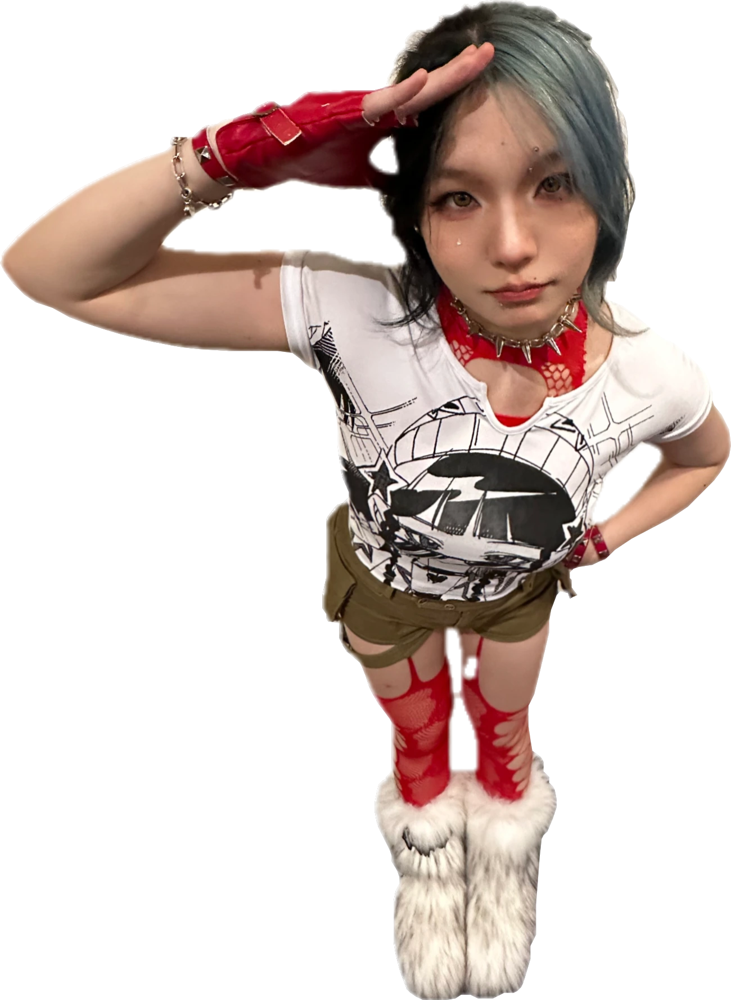

Erica Lin.
Game & level designer at USC.
Spaces to explore.
Stories to piece together.
Selected work
digital + tabletop · 2026
a few more worlds to get lost in
off the screen
A little more me.

hi, i'm erica :)currently making games at USC
a note from my desk
Hello, you.
I’m Erica, a game designer and developer at USC.
I make spaces to explore, systems to figure out, and stories to piece together.
I’m drawn to that little moment when a place, a rule, or a relationship starts to make sense.
erica
things on my worktableAlways making.
Spatial puzzles.
Quiet little stories.
Theatre layouts.
Games around a table.
level designgame designUnityprototyping
find my games on itch.io ↗
there's a person behind the pixels.